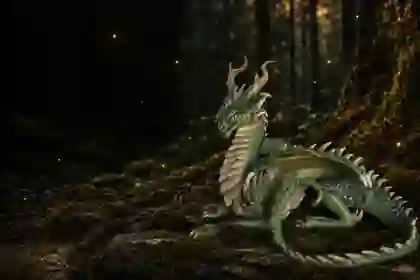
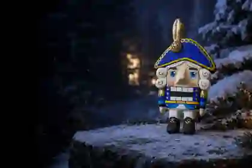

Древние существа
Чешуя, крылья и память о временах, которых не застал никто. Мир тех, кто старше сказок.
Войти в мирАвторские фигурки ручной работы
Вера создаёт каждого Жителя — от идеи до последнего штриха.
Миры мастерской

Чешуя, крылья и память о временах, которых не застал никто. Мир тех, кто старше сказок.
Войти в мир
Синий вечер, снег на еловых лапах и тёплый свет в окне. Мир, где ждут чуда и слышат музыку.
Войти в мирСумрак между корнями, мох, папоротник и огоньки, которые зажигаются сами.
Войти в мирСолнце на деревянном полу, лён и тишина. Не каждая легенда должна рычать.
Войти в мирКто ждёт своего Хранителя
Щелкунчики, мышиные короли и другие Жители, в которых живут зимние истории, музыка и ожидание чуда.
Зимняя история с ровной осанкой, мундиром и очень серьёзной задачей — беречь чудо.
Корона, мундир и трое внимательных голов — королевство в ладони.
Тихая зимняя сцена: девочка прижимает к себе Щелкунчика, будто уже знает, чем закончится сказка.
Три взгляда, чёрно-фиолетовое платье и корона — всё в ней говорит без спешки.
Посмотрите готовые работы или напишите Вере напрямую.